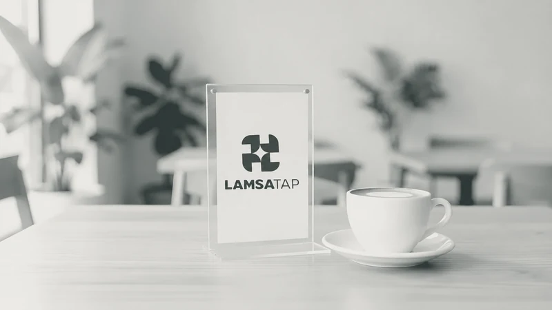
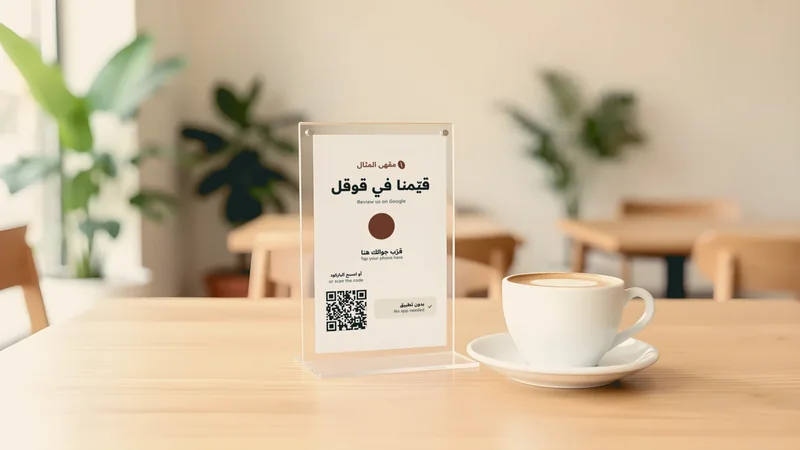

قرّب جوالك، تنفتح الصفحة
المنيو وتقييم قوقل والواي فاي ودليل الشقة، تنفتح باللمس أو بالباركود، بدون تطبيق.
العتاد والتركيب علينا طول الاشتراك
وش عندك؟


عندي مطعم أو كافيه
منيو، وتقييم قوقل، وواي فاي، وروابط حساباتك.


عندي شقق أو إيجار قصير
دليل لكل وحدة: الواي فاي، ووقت الخروج، وبلاغ الصيانة.
كيف نشتغل
نتفاهم على واتساب
ترسل لنا نوع محلك أو عدد وحداتك، ونقترح لك الباقة.
نجهّز كل شي بهويتك
الصفحة والعتاد بشعارك وألوانك، والشريحة والباركود على نفس الرابط.
نركّب عندك
نركّب حالياً في جدة، ونجرّب كل شريحة قبل التسليم.
تبغى تكلّم أحد منا؟
يرد عليك واحد منا خلال ساعة، من 9 الصبح لين 11 الليل، كل يوم.
كلّمنا على واتساب
رقم التواصل على واتساب ينضاف قريباً.
بالضغط تنفتح محادثة مع بوت لمسة تاب، ويوصلنا معرّفك في تليجرام لهذا الطلب بس، وما نشاركه مع أحد. سياسة الخصوصية